Transportation Guide
All forms of transportation that are based with an NPC or through an object in the world (Rune Ess mine, Spirit Trees, ships, etc) are marked on the minimap and on the world map with the right-facing green with orange trim arrow. All other forms (Lyre, jewelry, etc) is obviously not displayed on the minimap.Teleport Spells
Teleports are the easiest way to get around for most people with decent magic levels. The following is a list of regular magic teleports.
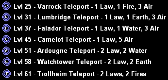
Ships
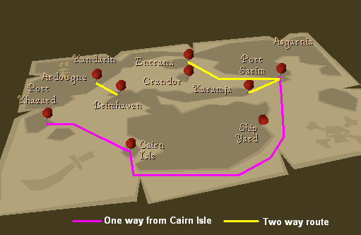
Port Sarim
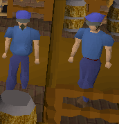 |
From Port Sarim, you can talk to either Seaman Lorris, Seaman Thresnor, or Captain Tobias. They will take you to the northeast Karamja dock for 30 gp. |
Karamja
| The dock on the northeast side of Karamja goes back to Port Sarim as well. To go to Port Sarim from this dock, talk to a Customs Agent. They will ask to search you, and you should let them. As long as you aren't carrying Karamja rum, they will let you go to Port Sarim for only 30 gp | 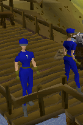 |
Ardounge - Brimhaven
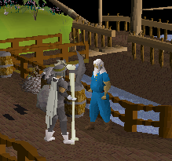 |
North of Brimhaven there is a dock to Ardougne. Once again there are Customs Agents that will ask to search you and charge you 30 gp for passage. Let them search you, pay the 30 gp and the boat takes you to Ardougne. At Ardougne, talk to Captain Barnaby there and he'll charge you 30 gp to go to Brimhaven. |
Cairn Isle - Shilo Village
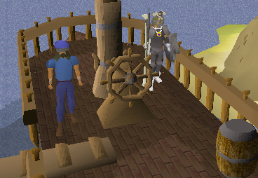 |
Just south of Cairn Isle on Karamja (West of Shilo Village) is a boat dock for the Lady of the Waves. You can go up the ladder to the dock and walk across onto the boat. Give Captain Shanks your ticket (purchased in Shilo Village for 20 - 50 gp) and travel to either Port Sarim or Port Khazard. Buy tickets for the Lady of the Waves in Shilo Village from Seravel, upstairs in the Fishing Shop. They cost 25 gp each. |
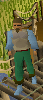 |
Entrana
At Port Sarim you can talk to the Monks of Entrana on the dock and they will take you for FREE to Entrana. However, if you are wearing\holding any weapon, armor, or mystic robes, you will not be allowed to go to Entrana.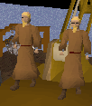
At Entrana, talk to the Monks of Entrana on the dock to go back to Port Sarim.
Miscellania
| To get to Miscellania, talk to the Sailor on the dock north of the market in Rellekka. If you have done the Fremennik Trials Quest, he will take you to Miscellania for free, otherwise you cannot reach Miscellania. On Miscellania, talk to the Sailor to get back. |
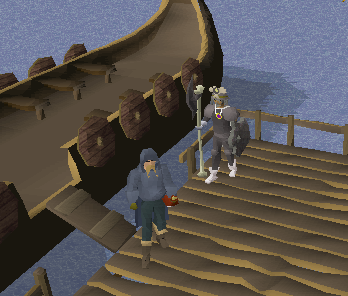 |
Spirit Trees
The Tree Gnome Village Quest is required to use these routes. There are four different Spirit Tree locations: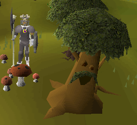 |
Forest just north of Varrock (northwest of the city wall corner) |
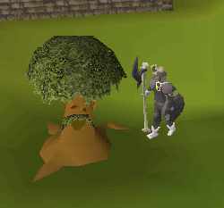 |
Khazard battlefield, northwest of the Clock Tower and southwest of the Carnillean Mansion in Ardougne |
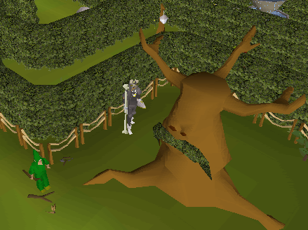 |
Center of the Tree Gnome Village maze |
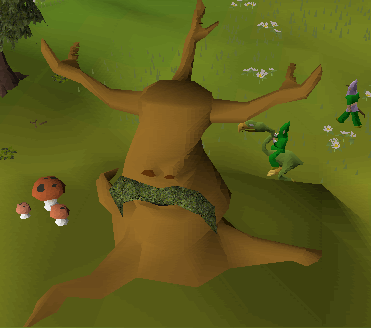 |
Tree Gnome Stronghold, west of the entrance to the Agility Course and south of the Grand Tree ramp |
The Varrock and Khazard Spirit Trees can only take you to the Tree Gnome Village. The Spirit Trees in the Tree Gnome Village and the Tree Gnome Stronghold are "trunk" locations (lol) that can transport you to any of the other three Spirit Trees.
Gliders
Gnome Gliders
The Grand Tree Quest is required to use the gnome gliders. To use a glider, talk to the Gnome pilot near the glider and he will display a map for you. When traveling from anywhere but the Grand Tree, you must first fly to Ta Quir Priw (Grand Tree). From the Grand Tree you can then fly anywhere. NOTE: Sometime you can crash and land short of where you are headed.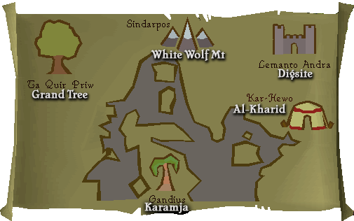
Carts
Shilo Village Carts
The Shilo Village Quest is required to use the Shilo cart system. Just south of the Brimhaven dock to Ardougne, there is a Cart and a man named Hajedy. Talk to him and he will charge you anywhere from 2 gp to 200 gp depending on how much money you are carrying. If he asks just a tad too much for you to pay, try to buy a ticket again as his prices vary somewhat. You can also right click the cart and hit ride to buy a ticket.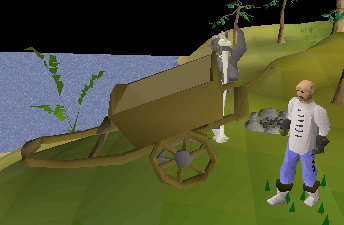
In Shilo Village, east of the general store and west of the Bank, there is another cart. Vigroy is the driver and the same variable price system applies.
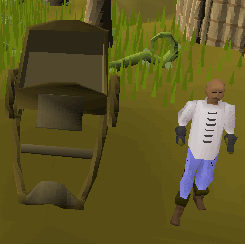
Jewelry
Amulet of Glory
Ranging in price from 80k to 120k, an Amulet of glory (commonly called a glory ammy) is an enchanted Dragonstone amulet. You can teleport to four locations with the glory ammy by unequipping it, right clicking it, and selecting rub.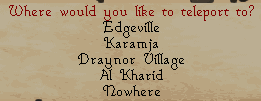
It can hold up to 4 charges at a time. To charge a glory ammy, you must go to the Fountain of Heros at the end of the Hero's Guild basement and use your ammy with it.
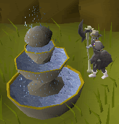
The Amulet of glory can be recharged an unlimited amount of times and doesn't disintegrate when it has no charges left. (As an added bonus, you get more gems while Mining if you are wearing a charged glory ammy.)
Ring of Dueling
A Ring of dueling ranges in price from a few hundred gp to a few thousand gp. A Ring of dueling is an enchanted Emerald ring. It starts with 8 charges and cannot be recharged. After the 8 uses, the ring disintegrates and disappears. You can teleport to two locations with the Ring of dueling by unequipping it, right clicking it, and selecting rub.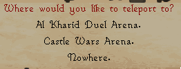
Ring of Life
A Ring of life can cost anywhere from 1k to 10k. A Ring of life is an enchanted Diamond ring. It has only one charge and it disintegrates when you use it. It cannot be rubbed and may be a lifesaver in combat. When it is equipped and you get down to below 10% of your HP, you will automatically be teleported to Lumbridge. This may seem like dying... only you keep your stuff. The drawback of the Ring of life is if you are fighting something that can wipe out more than 10% of your HP, it may kill you with one blow before the Ring can kick in to save you!Games Necklace
These don't really sell much since almost everyone can craft and enchant them. It's an enchanted Sapphire necklace. It starts with 8 charges and cannot be recharged. After the 8 uses, the necklace disintegrates and disappears. You can teleport to the Burthorpe Games room with it by unequipping it, right clicking it, and selecting rub. This is a good thing to use to get to the Hero's Guild quickly to charge your Amulet of Glory.Quest Items
Enchanted Lyre
The Fremennik Trials Quest is required to be able to enchant a Lyre. You can re-enchant any Lyre by offering the Fossegrimen a Raw shark like you did in the quest. Play the Enchanted Lyre and it will teleport you to Rellekka. You have to re-enchant it with a Raw shark after every use though.Wilderness
Note: Pk'ers tend to hang around these spots from time to time with bind/teleblock spells to get you, so don't forget you're in the wilderness.Ardougne to Deserted Keep Lever
West of the Ardougne Castle but still in East Ardougne there is a shack that is just north of the northern watchtower that is next to the gate to West Ardougne. Inside is a lever. Pull the lever in the shack and it will teleport you to the Deserted Keep in level 55 wilderness. There is a lever there to pull to get back to Ardougne. This a great way to get to the Mage Arena and Rogues' Castle. You need to bring a sharp object (as in a weapon or knife) to cut through the web to get out of the Deserted Keep area.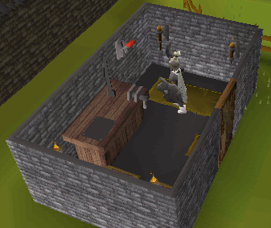
Ardounge lever
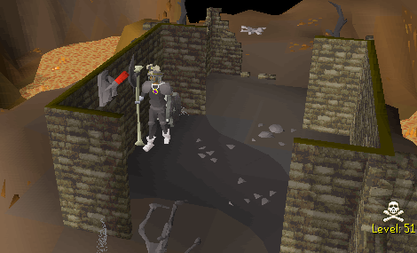
Wilderness lever
Mage Arena (Safe Zone) Lever
This place is just west of the Deserted Keep (see above) and it is the only safe spot in the wilderness where you can't be attacked, and is the only place where you can teleport above level 20 wilderness. This level 55 wilderness place is used for banking (only bank in the wilderness!), buying runes (they sell cheep laws and nats), doing the Mage Arena miniquest, and buying/changing god capes and staffs. To get to the lever you must have a sharp object (as in a weapon or knife). You need that sharp object to cut through two webs to get to the lever. Just pull the lever and you are safe! Pull the lever in the Mage Arena ready room to get back out to the wilderness (but remember, you can teleport here!) If the webs aren't cut when you get back into the wilderness, you'll have to recut them.Note: The actual mage arena where you fight mages is in the wilderness and you can be pk'd or killed.
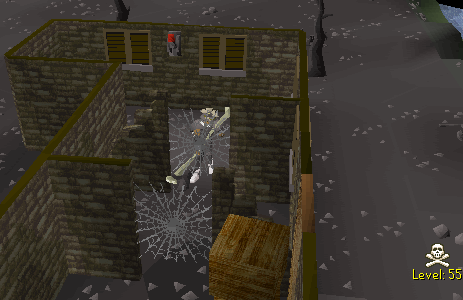
Safe zone lever
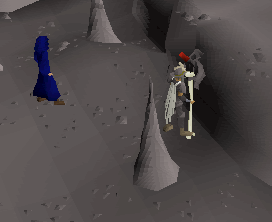
Safe zone
Miscellaneous
Elven Gate
After doing the Regicide Quest, you can use the Huge Gate south of the Tree Gnome Stronghold, west of Ardougne, and in the northeast corner of Arandar. It's the red square in the map below. This gate allows you to get Isafdar and the Elven lands there without going through the dreaded Underground Pass.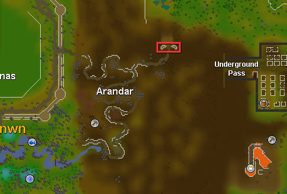
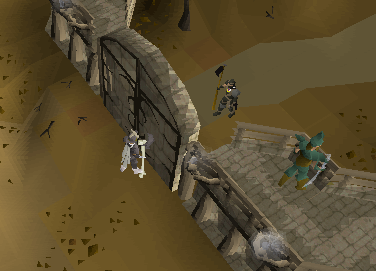
The Huge Gate
Shantay to Port Sarim
| If you talk to Shantay at the Shantay Pass (South of the Al Kharid Palace) and ask what this place is, he'll give you these options. | 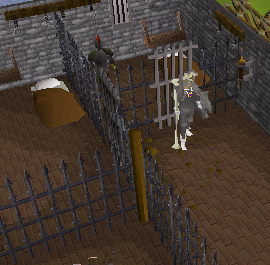 |
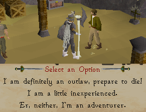 |
| If you say that you are an outlaw, he will throw you in his little jail on site. But, if you say you will not pay the 5 gp fine, you will be sent to the Port Sarim jail. | ||
So, if you use a Amulet of glory to teleport to Al Kharid or use a Dueling ring, you can use this method to get to Port Sarim, Entrana, and Karamja.
White Wolf Mountain Tunnel
After doing the Fishing Contest, you can take a tunnel under White Wolf Mountain so you dont have to walk over it.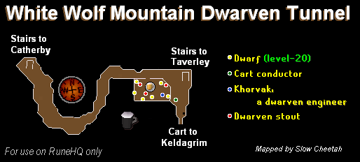
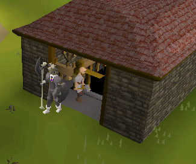
Taverley entrance
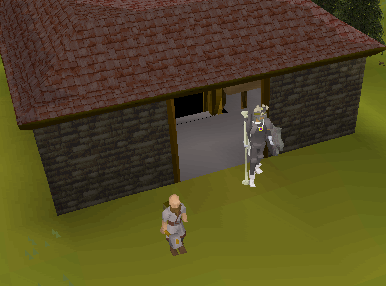
Catherby entrance
Magic Guild Portals
On the top floor of the Magic Guild in Yanville (lvl 66 magic required) there are three portals in three different sides of the room.East - Wizards Tower southeast of Draynor
West - Thormacs Tower southwest of Seer's Village
South - Dark Wizards Tower
Trawler Minigame to Port Sarim
An easy way to go from Port Khazard to the beach south of Port Sarim is to do the Trawler Minigame. Once in the Trawler Minigame (Level 15 fishing required), just stand around for about two minutes to let the ship sink. Once it sinks, just climb on a barrel. You'll then be teleported to the beaches south of Port Sarim and get hit for a couple of points damage.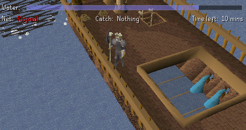
View from the deck, you can see the leaks down below
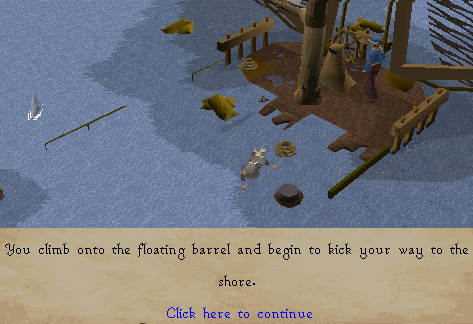
Climb on the barrels to get to shore!
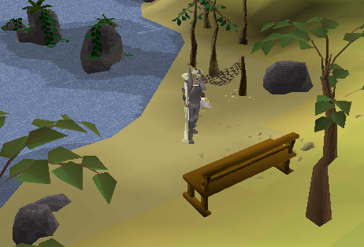
Port Sarim shore
Death
A commonly overlooked and infrequently used way of getting to the Lumbridge area is to simply die! While this is NOT recommended if you have more than 3 items or have a skull over your head, it works quite well if you are a low level player. Just run over to a higher lvl monster, turn off auto-retaliate, and get killed! Oh dear, you're dead and in Lumbridge! NOTE: You lose all but your three most valueable items when you die. If you have a wilderness skull over your head you do not keep any items.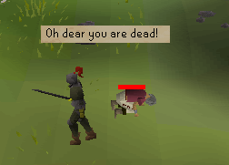
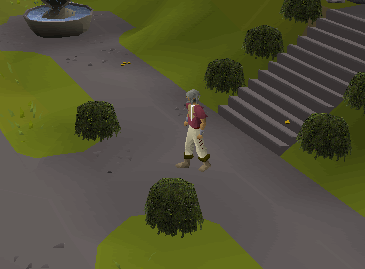
You arrive in Lumbridge
Running and Walking
Obviously you know how to Run and Walk. This section is mostly about making the most of your energy.NOTE: While the running option is set to "Walk" you can hold the Control-key and click somewhere to run to that place!
Energy potions
These give you 10% energy for every one dose. They can hold up to (4) doses per vial (a total of +40% energy). These are very handy for long runs in the Al Kharid Desert.Super energy potions
These give you 20% energy for every one dose. They can hold up to (4) doses per vial (a total of +80% energy). These are very handy in the Wilderness.Strange fruit
This is a purple fruit that looks kinda like a purple pear. It can be eaten once and gives you a plus 20% energy. Strange fruit come for the plant random event. If you see a plant suddenly grow up out of the ground next to you, wait for it to stop growing then grab the plant. This plant doesn't heal HP however, just energy.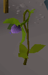
A strange plant
High Level Agility
The higher your agility level, the faster you regain energy. This does NOT make you run faster, however it makes you run LONGER. At level 99 agility, you regain your energy three times as fast as with level 1 agility. So, if you like PK'ing, get a decent agility level if you think you might lose.Boots of Lightness
These boots are gotten fairly early on into the Temple of Ikov quest. They are colored a pale light blue color. The best part besides them being free is that they have a -4 kg weight! So, wear these and nothing else and you'll regain your energy even faster or wear them with other stuff to lighten your load. You don't actually have to start the quest to get the boots, just bring your candle and a knife, go down the stairs and cut the web at the Temple of Ikov to get the Boots of Lightness.This special report was written by Slow Cheetah. Thanks to Fireball0236, Bectemir, oakey_82, gondomwinges, Runehq user, Darkstar5757, Im4eversmart, Lewt04, pokemama, bloodyneck, the_peleton, Imperial G96, Nuke-Marine, Ghoulies, Ponteaus, NuclearBlade, amiele, yoshiman89, Aakanaar, falcon0300, and purplepartyhat for corrections.
This special report was entered into the database on Mon, Jun 13, 2005, at 01:57:09 PM by Lewt04 and was last updated on Fri, Dec 09, 2005, at 06:49:11 AM by Fireball0236.